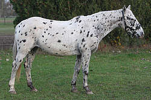
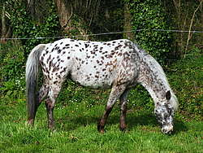
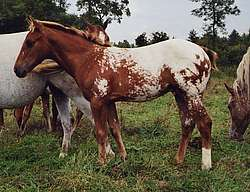
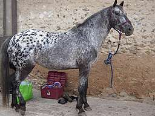
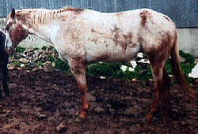
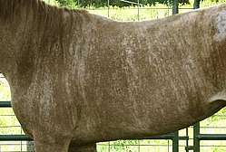

 - Le :
Le --- est blanc uniforme (avec la peau rose sous le blanc), sur lequel sont nettement visibles des taches de couleur de forme et de taille variables, réparties sur tout le corps.Ce sont ces taches colorées qui permettent de déterminer la robe de base.
 - Le :
Le --- présente de nombreuses tâches colorées de taille et de forme inégales et variables sur le corps.La robe de base se reconnaît en dehors des taches.
 - La :
La --- est une panachure blanche (avec une peau rose en dessous) d’un seul tenant sur la croupe.Elle peut s’étendre jusqu’au garrot.Les contours sont variables, de très nets à déchiquetés ou mélangés.Cette panachure peut être tachetée et l’on parle alors de --- tachetée. Sinon, on parle de -- uniforme.
 - Le :
Le --- est une robe envahie de poils blancs, (robe paraissant presque blanche), sauf au niveau des articulations où des poils colorés sont présents (de la couleur de la robe de base).
 - Le :
La robe est couverte de rayures blanches.
- Le :
La robe est couverte de rayures noires.